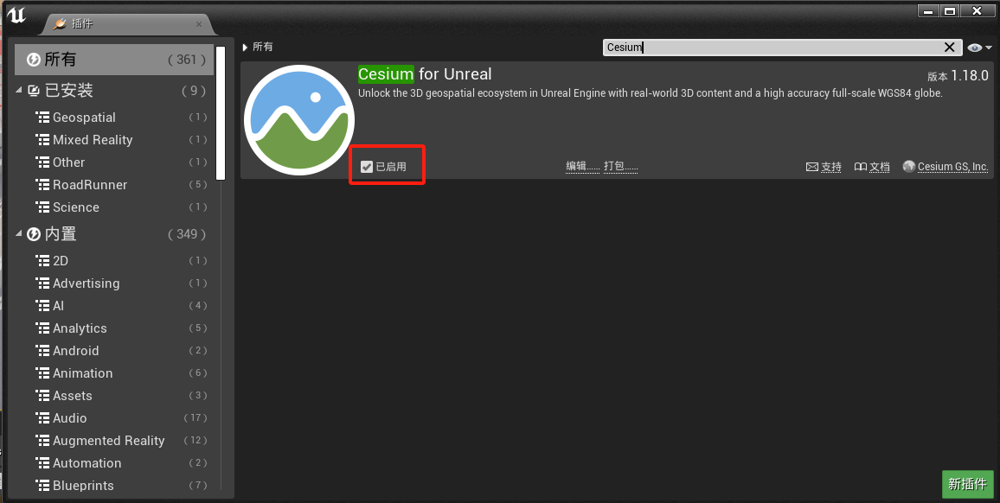
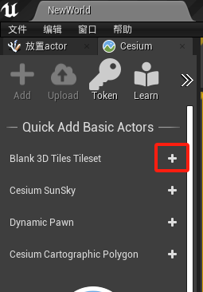
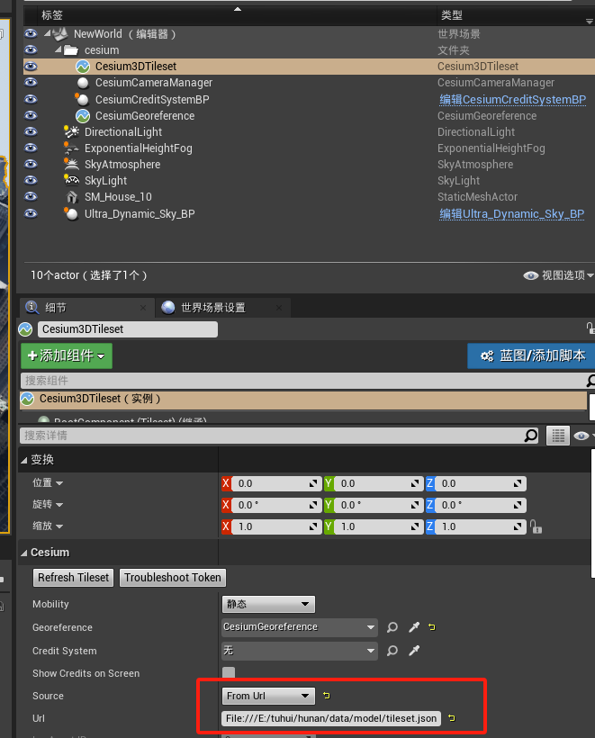
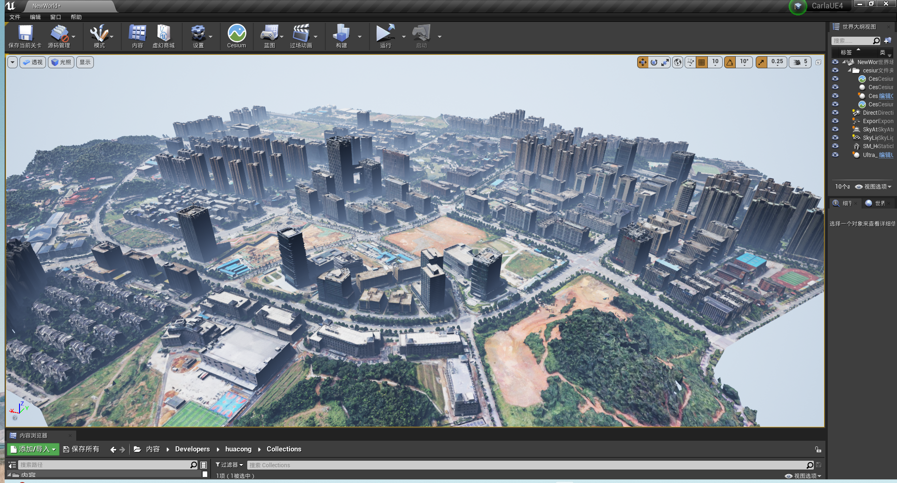

倾斜模型导入Carla
导入道路和红绿灯
0.将RoadRunner插件.zip解压到carla\Unreal\CarlaUE4\Plugins，运行make launch重启编辑器。
1.在carla\Unreal\CarlaUE4\Content\roadrunner中新建static（放资产）和map（放地图）；
在编辑器中static目录中右键导入baidutest2test.fbx。
导入选项：
勾选 纹理中反转法线贴图。
2.将light.umap拷贝到carla\Unreal\CarlaUE4\Content\roadrunner\map路径下。
3.在虚幻编辑器中点“文件”菜单中的“关卡另存为”（方便管理，把地图和红绿灯放一块），选择carla\Unreal\CarlaUE4\Content\roadrunner\map
4.将light.umap引入到baidutest2test.umap（虚幻编辑器中点“窗口”菜单中的“关卡”，将carla\Unreal\CarlaUE4\Content\roadrunner\map\light拖入到关卡窗口中->右键light，修改流送方式->固定加载）。
5.将carla\Unreal\CarlaUE4\Content\Carla\Maps\OpenDrive\baidutest2test.xodr拷贝到carla\Unreal\CarlaUE4\Content\roadrunner\map\OpenDrive\baidutest2test.xodr
倾斜模型导入Carla
1.下载并解压 Cesium for Unreal 插件 到CarlaUE引擎的plugins/Marketplace文件夹下：

2.如果CesiumForUnreal未启用，则在CarlaUE中添加插件
 添加完成后重启引擎。
3.添加插件对象到场景中，配置参数和模型路径：
CesiumGeoreference设置为：28.235238, 112.877178, 0
Source设置为File:///D:/ssd/model/tileset.json。



注意
从链接 中的map文件夹内下载中电软件园_cesium_model.zip并解压。这里测试用的是本地路径，也可以用静态资源服务。
去掉Keep World Origin Near Camear勾选。
（4.将Trees.umap中放到本地文件夹下，菜单中点击窗口->关卡，从内容浏览器中将Trees.umap拖进导弹出界面，然后右键Trees关卡，选择修改流送方法->固定加载。）
（5.在世界大纲视图中选中Cesium3DTileset，将Cesium中的Mobility修改为可移动。）
（6.添加光源DirectionalLight、ExponentialHeightFog、SkyAtmosphere、SkyLight。）
7.模型在CarlaUE中的场景效果

注意
在编辑器中如果运行时出现倾斜摄影模型部分不加载，则使用独立进程运行可全部加载。
倾斜摄影
由倾斜摄影osgb转换成3Dtiles格式（cesium可直接使用）。
导入中电软件园场景
1.从源代码编译Carla；
2.导入插件：roadrunner插件（包括RoadRunnerCarlaContent、RoadRunnerCarlaDatasmith、RoadRunnerCarlaIntegration、RoadRunnerDatasmith、RoadRunnerImporter、RoadRunnerMaterials、RoadRunnerRuntime）、Cesium插件；
3.导入fbx地图（导入选项都是默认），默认生成的地图是Content/Carla/Maps/roadbuild；
4.根据倾斜模型导入Carla的步骤添加除了建筑以外的其他资产；
5.导入自己设计的关卡：虚幻编辑器->窗口->关卡，从内容浏览器中将langan.umap、tafficsign.umap、Trees1.umap等关卡拖到弹出的关卡页面，并右键每个关卡->修改流送方法->固定加载；
打包地图
1.参考 RoadRunner Scenario+CARLA联合仿真 进行地图打包。
2.将打包后场景的WindowsNoEditor\CarlaUE4\Content\Carla\Maps\OpenDrive\baidutest2test.xodr文件拷贝到WindowsNoEditor\CarlaUE4\Content\RoadRunner\map\OpenDrive\baidutest2test.xodr，否则调用client.get_trafficmanager(args.tm_port)会出现failed to generate map的错误。
3.报警告WARNING: requested 30 vehicles, but could only find 0 spawn points，重新运行场景即可。
相对路径加载资产
1.在“世界大纲视图”中搜索FbxScene_baidutest2test，编辑编辑
2.事件开始运行
3.右键加一个“根目录”
4.右键“附加”（字符串-附件），由2个输入变成3个。其中 A 为: file:///，B 从根目录连接来，C 为: ccsp/tileset.json
cesium：
5.在左边“我的蓝图”中新建一个变量 Cesium3DTileset（cesium），
右边“细节”中的“变量类型”改变为 Cesium3Dtiles
6.右键 获取 Cesium 3DTileset （组件 设置） 右边修改“默认值”（浏览）
7.连接到 SET url（设置 Url） Ceisium 3DTileset
问题：不可编辑类默认对象中的此值